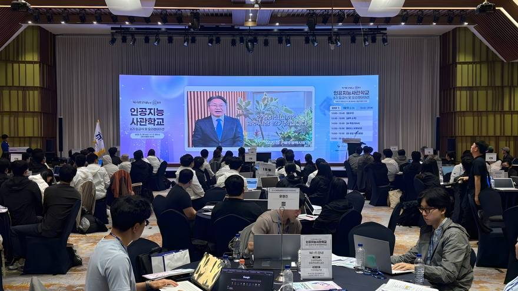
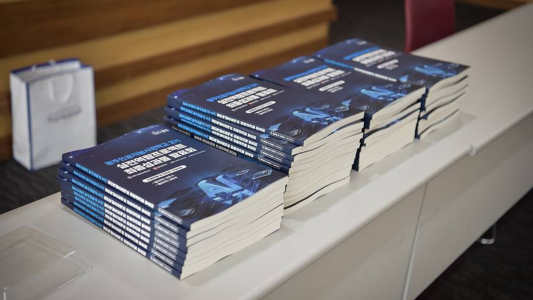
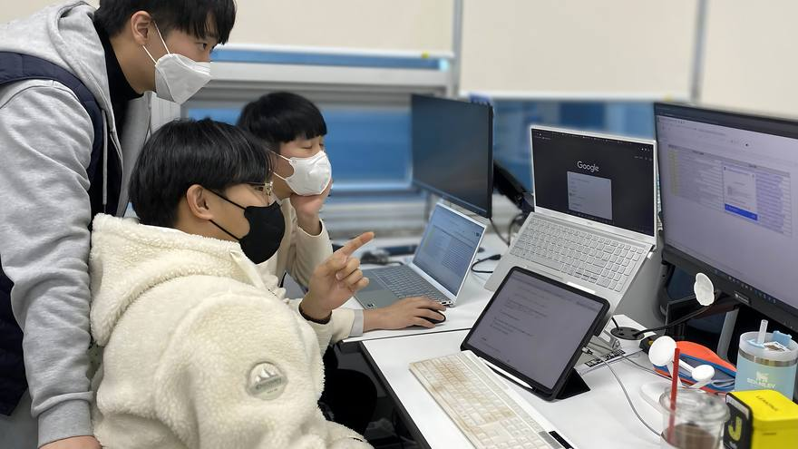
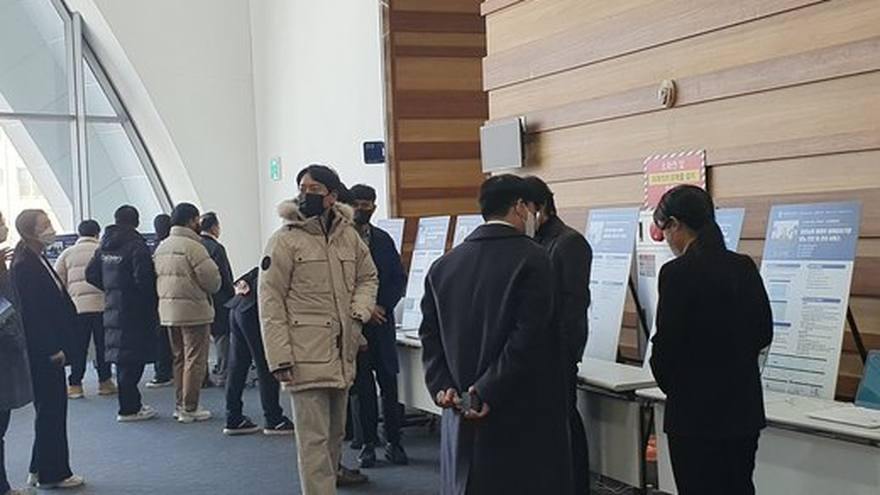
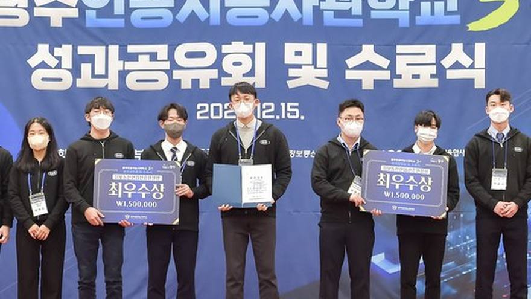

먼저 다녀온 선배들의 SSUL
인터뷰, 후기, 프로젝트, 기수 기록까지 먼저 지나간 선배들이 남긴 이야기를 한곳에 모았어요.
인터뷰
여덟 달을 먼저 지나온 선배들에게 물어봤어요
후기
먼저 겪어 본 선배들이 솔직하게 남겼어요
교통비 6만원, 점심값 20만원.김ㅇㅇ · 7기
의료 데이터는 전처리가 8할입니다.정ㅇㅇ · 6기
그 사이에 뭘 보여줄지가 팀의 스프린트가 됩니다.오ㅇㅇ · 6기
코드를 짜는 시간보다 왜 그렇게 짜는지 듣는 시간이 길었습니다.장ㅇㅇ · 6기
도시락 데우는 줄에서 만난 네 명이 그대로 팀이 됐습니다.이ㅇㅇ · 7기
모델은 만들었는데 어디에 올릴지를 몰랐습니다.최ㅇㅇ · 5기
도약과정에서 만든 서비스를 그대로 가져갔습니다.윤ㅇㅇ · 5기
기획으로 들어왔는데 데이터를 들여다보는 시간이 더 많았습니다.노ㅇㅇ · 7기
인기 시간대는 전날 밤에 다 나갑니다.박ㅇㅇ · 6기
질문을 적어갔더니 돌아오는 버스가 달랐습니다.한ㅇㅇ · 4기
화면을 세 번 갈아엎고 나서야 통과됐습니다.신ㅇㅇ · 6기
제가 만든 걸 바로 올려 볼 수 있는 쪽이 맞았습니다.구ㅇㅇ · 5기
취업 성공4기
면접에서 제일 많이 받은 질문
"비전공자인데 왜 이 일을 하려고 하나요"였습니다. 여덟 번 중 여섯 번 받았습니다.
배ㅇㅇAI 서비스 기획 생활5기퇴사하고 들어와서 계산해본 생활비
소득이 끊긴 상태로 8개월을 버텨야 하니, 지원금이 어디까지 커버되는지 먼저 계산했습니다.
오ㅇㅇAI 서비스 기획 수업7기도메인은 흥미 반, 시장 반으로 골랐습니다
여섯 갈래 중에 고르는 날이 옵니다. 재미만 보고 고르면 후반이 힘들 수 있습니다.
진ㅇㅇAI 모델개발 프로젝트6기코드를 못 짜도 몫은 충분했습니다
데이터 정리와 기획으로 팀에 기여했습니다. 팀 안에서 역할은 생각보다 다양합니다.
황ㅇㅇAI 클라우드·인프라프로젝트 아카이브
선배들은 여기서 이런 걸 만들었어요
기수별 이모저모
입교식부터 수료식까지, 기수마다 이런 일이 있었어요
-

7기 · 2026. 05. 29유튜브 영상(새 창), 길이 3:127기 입교식 하이라이트
테이프를 끊고 여덟 달이 시작된 날을 3분으로 담았습니다.
-

6기 · 2025. 10. 22유튜브 영상(새 창), 길이 4:47도약과정 중간발표회 현장
-

5기 · 2024. 09. 05기업탐방 — 이스트소프트·네이버·AWS
-

4기 · 2023. 11. 30취업박람회 부스를 돌던 하루
-

3기 · 2022. 12. 15유튜브 영상(새 창), 길이 11:303기 성과공유회 및 수료식